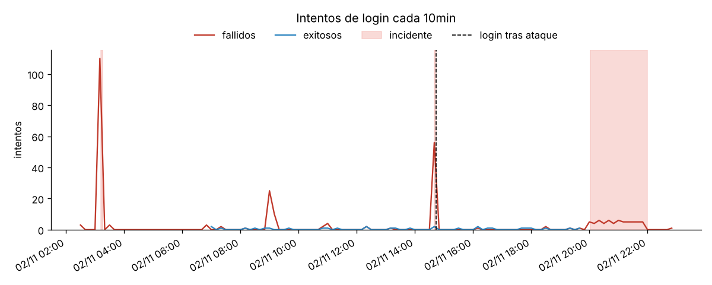
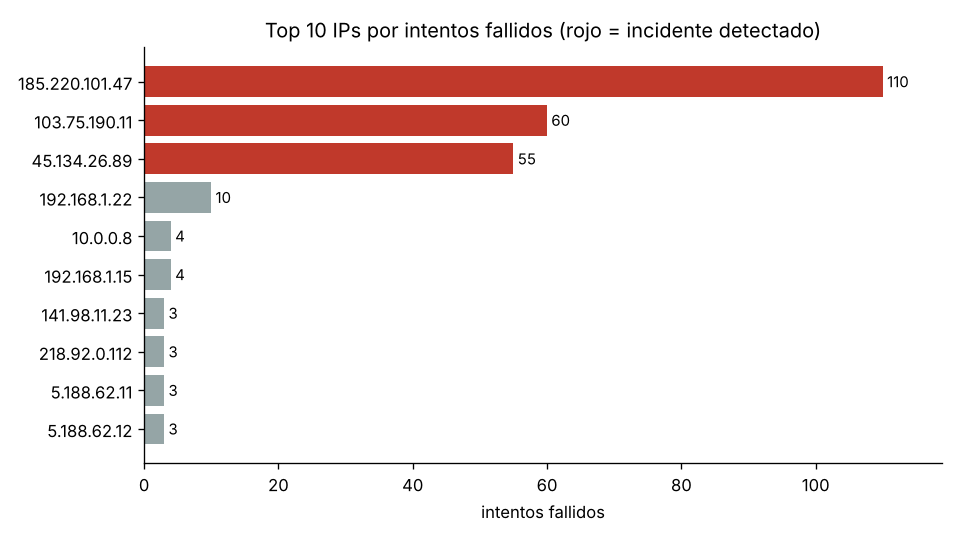
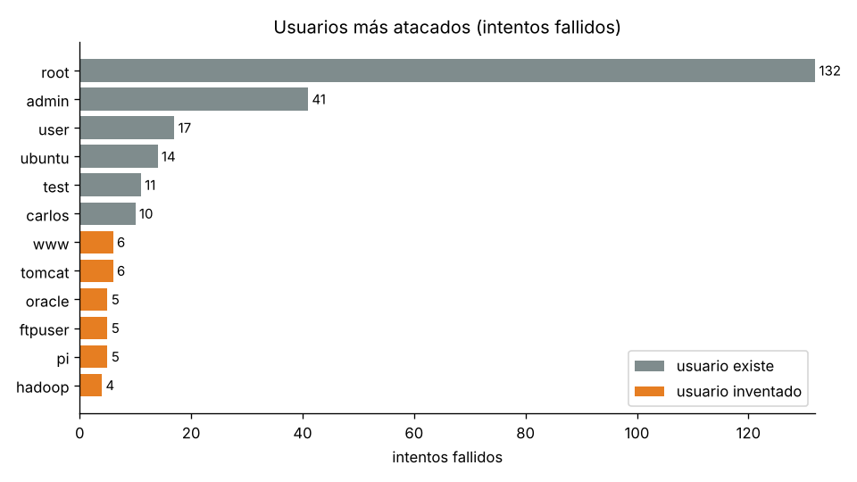

Centinela: aprende ciberseguridad construyendo un detector
Un curso práctico, en español, que recorre el repositorio Centinela de principio a fin: cómo se leen los logs de un servidor, cómo se detecta un ataque de fuerza bruta, cómo se analiza y se responde, y los conceptos de redes y criptografía que hay detrás.
- Cada módulo tiene una explicación, fragmentos del código real del proyecto y, a menudo, un laboratorio o una figura interactiva.
- Al final de cada módulo hay un quiz. Cuando contestas todas sus preguntas, el módulo se marca como completado en el índice.
- Tu progreso se guarda solo en este navegador. Si cambias de ordenador, empiezas de cero.
- El glosario explica cada término técnico, y el examen final mezcla preguntas de todo el curso.
Mapa del curso
Qué necesitas
- Saber lo básico de Python: variables, listas, diccionarios, funciones y bucles
for. - Para ejecutar el código: Python 3.10 o superior y las dependencias del proyecto.
git clone https://github.com/a1304rojasc/Centinela.git
cd Centinela
python -m pip install -r requirements.txt
python -m centinela generar
python -m centinela todofiguras/ del repositorio. Para verlas dentro del curso, abre este archivo desde tu copia del repositorio (no descargado suelto).SSH y los logs de autenticación
Antes de detectar un ataque hay que saber dónde queda registrado y qué aspecto tiene.
- Qué es SSH y por qué es un objetivo tan atacado.
- Dónde están los logs de autenticación en Linux y cómo es una línea.
- Qué líneas importan para detectar ataques y cuáles son ruido.
SSH: la puerta de administración
SSH (Secure Shell) es el protocolo con el que se administra un servidor Linux a distancia. Escucha por defecto en el puerto 22. Quien entra por SSH con una cuenta con privilegios controla la máquina, así que cualquier servidor con el puerto 22 abierto a Internet recibe intentos de login automáticos a todas horas.
Hay dos formas habituales de autenticarse:
- Contraseña (
password): se puede intentar adivinar, que es justo la fuerza bruta. - Clave pública (
publickey): el usuario demuestra que tiene una clave privada. No se puede adivinar en la práctica, por eso es la opción recomendada.
Dónde se guardan los intentos
| Sistema | Archivo |
|---|---|
| Debian, Ubuntu | /var/log/auth.log |
| Red Hat, Fedora, Rocky | /var/log/secure |
| Sistemas solo con journald | journalctl -u ssh (o -u sshd) |
Leer estos archivos requiere permisos de administrador. Por eso Centinela trae un generador (centinela/generador.py) que fabrica un logs/auth.log realista para practicar sin tocar un servidor real.
Anatomía de una línea
Nov 2 03:12:05 srv-web01 sshd[4242]: Failed password for root from 185.220.101.47 port 51234 ssh2
└──── fecha ───┘ └servidor┘ └proceso┘ └resultado┘ └método┘ └usuario┘ └──── IP ────┘ └puerto┘- Fecha: el formato clásico de syslog no incluye el año, y el día se rellena con un espacio (
Nov 2, con dos espacios). Por eso el parser necesita que le digas el año. - Proceso:
sshdcon su número de proceso (PID) entre corchetes. - Resultado:
Accepted(entró) oFailed(falló). - Puerto: es el puerto de origen del cliente, que cambia en cada conexión. No es el 22.
Los sistemas modernos pueden usar fechas ISO 8601, que sí llevan año y zona horaria. Centinela entiende los dos formatos:
2026-11-02T03:12:05.123456+00:00 srv-web01 sshd[4242]: Accepted password for maria from 192.168.1.15 port 52000 ssh2Señal y ruido
La mayoría de las líneas no son intentos de login. Estas son las que importan y las que no:
| Línea | ¿Cuenta? |
|---|---|
Failed password for root from … | intento fallido |
Failed password for invalid user oracle from … | intento fallido contra un usuario que no existe |
Accepted password for maria from … | login exitoso |
Invalid user oracle from … | no va siempre seguida de la línea Failed … invalid user; si se contara, cada intento valdría doble |
CRON[…]: pam_unix(cron:session) …, sudo: … | no tareas programadas y comandos con privilegios |
Connection closed by authenticating user root … [preauth] | no el cierre de una conexión ya contada |
Los actores del log de ejemplo
El generador crea un día de actividad del servidor srv-web01 con personajes elegidos para poner a prueba al detector:
| Actor | IP | Qué hace |
|---|---|---|
| 5 usuarios legítimos | 192.168.x, 10.0.x | Entran en horario laboral; a veces se equivocan una o dos veces. Carlos falla 4 veces seguidas. |
| Ráfaga | 185.220.101.47 | 110 contraseñas de diccionario en unos 4 minutos. |
| Enumeración | 45.134.26.89 | Prueba 55 usuarios inventados y entra con la cuenta test. |
| Lento | 103.75.190.11 | Un intento cada 90-150 s durante dos horas. |
| Botnet | 5.188.62.10-21 | 12 IPs con 2-3 intentos cada una. |
El generador usa una semilla fija (random.Random(42)): la misma semilla produce siempre el mismo log, lo que permite que los tests den siempre el mismo resultado.
Leer logs con expresiones regulares
Una expresión regular (regex) es un molde que describe cómo es un texto. Con ella convertimos cada línea en datos con estructura.
- Las piezas básicas de una regex: clases, cuantificadores, grupos y alternativas.
- Usar grupos con nombre y el modo
re.VERBOSEde Python. - Por qué una regex no basta para validar una IP.
Las piezas que usa Centinela
| Pieza | Significa | Ejemplo |
|---|---|---|
\d | un dígito | \d{2} → 03 |
\s / \S | un espacio / cualquier cosa que no sea espacio | \S+ → srv-web01 |
+, {1,3}, ? | uno o más / entre 1 y 3 / opcional | \d{1,3} → 185 |
A|B | A o B | Accepted|Failed |
(?P<nombre>…) | grupo con nombre: guarda lo que encaja | (?P<ip>…) |
(?:…) | agrupa sin guardar | (?:\.\d{1,3}){3} |
\[ | un corchete literal (la barra "escapa" el símbolo) | sshd\[\d+\] |
^ | inicio de la línea |
El patrón de Centinela
Así es (resumido) el patrón de centinela/parser.py. re.VERBOSE permite escribirlo en varias líneas con comentarios. En ese modo los espacios normales se ignoran, y para un espacio de verdad se escribe \s o \ .
PATRON = re.compile(r"""
^(?P<fecha_syslog>[A-Z][a-z]{2}\s+\d{1,2}\s\d{2}:\d{2}:\d{2})
\s(?P<host>\S+)
\ssshd\[\d+\]:
\s(?P<resultado>Accepted|Failed)
\s(?P<metodo>password|publickey|keyboard-interactive/pam)
\sfor
\s(?P<invalido>invalid\ user\ )? # aparece si el usuario no existe
(?P<usuario>.+) # ¡lo escribe el atacante! (ver abajo)
\sfrom
\s(?P<ip>\d{1,3}(?:\.\d{1,3}){3})
\sport\s(?P<puerto>\d+)
(?:\sssh2)?(?::\s.*)?$ # la cola de sshd, y FIN de línea
""", re.VERBOSE)
coincidencia = PATRON.search(linea)
if coincidencia:
print(coincidencia.group("ip"), coincidencia.group("usuario"))(?P<invalido>invalid\ user\ )?. Sin ese grupo opcional, en la línea Failed password for invalid user oracle la regex tomaría invalid user oracle como nombre de usuario y no sabríamos que la cuenta no existe.El nombre de usuario lo escribe el atacante
Una primera versión de Centinela usaba (?P<usuario>\S+) (cualquier cosa sin espacios) y no anclaba el final de la línea. La auditoría de seguridad encontró dos fallos graves en ese patrón, porque el atacante elige el nombre de usuario con el que se conecta:
- Inyección de IP: con el usuario
x from 8.8.8.8 port 1, sshd escribe… invalid user x from 8.8.8.8 port 1 from 203.0.113.5 port 5555 ssh2, y la regex se quedaba con la primera IP, la falsa. El atacante podía esconder su IP y hacer bloquear a un inocente. - Evasión: con un usuario con espacios, como
a b, la regex no encajaba y la línea se ignoraba entera. El ataque era invisible.
La corrección usa .+, que es "codicioso" (se queda con todo lo que puede), y ancla el patrón al final de la línea con $. Así la IP elegida es siempre la última from IP port N, que escribe sshd y no el atacante. Pruébalo en el laboratorio de abajo con las dos últimas líneas. La lección: todo dato que pueda controlar un atacante es hostil, aunque venga dentro de un log "de confianza".
Una regex no basta para validar una IP
\d{1,3}(?:\.\d{1,3}){3} acepta 999.1.1.1, que no es una IP válida. Por eso el parser la comprueba después con el módulo ipaddress de Python:
import ipaddress
ipaddress.IPv4Address("185.220.101.47") # bien
ipaddress.IPv4Address("999.1.1.1") # ValueErrorEs una idea que se repite en seguridad: valida los datos con la herramienta más estricta que tengas, sobre todo si después los vas a usar para algo delicado, como escribir una regla de firewall (módulo 6).
Laboratorio: prueba el parser
Esta es la misma regex traducida a JavaScript, que escribe los grupos con nombre como (?<nombre>…) en vez de (?P<nombre>…). Edita las líneas, añade otras o rompe alguna y mira qué extrae.
Detectar la fuerza bruta con una ventana de tiempo
Una persona se equivoca de contraseña 1, 2, quizá 4 veces. Un programa falla decenas de veces en poco tiempo. Esa diferencia es la que buscamos.
- Qué es un ataque de fuerza bruta y sus variantes.
- Cómo funciona una ventana deslizante con umbral.
- Qué son los falsos positivos y los falsos negativos, y cómo afectan el umbral y la ventana.
Fuerza bruta y sus variantes
- Fuerza bruta / diccionario: probar muchas contraseñas, normalmente de una lista de contraseñas comunes, contra cuentas conocidas como
rootoadmin. - Enumeración de usuarios: probar nombres de usuario para descubrir cuáles existen.
- Ataque lento (low and slow): pocos intentos por minuto, para no disparar alarmas.
- Ataque distribuido: muchas IPs (una botnet) con pocos intentos cada una.
- Password spraying: una sola contraseña muy común probada contra muchos usuarios.
La ventana deslizante
Para cada IP, recorremos sus fallos en orden y mantenemos una "ventana" con los fallos de los últimos N segundos. Si dentro hay al menos umbral fallos, salta la alerta.
from collections import deque
def rachas(momentos, umbral, ventana):
cola = deque() # fallos dentro de la ventana actual
tramos = []
for t in momentos: # momentos ordenados de UNA IP
cola.append(t)
while t - cola[0] > ventana:
cola.popleft() # este fallo ya quedó fuera de la ventana
if len(cola) >= umbral:
inicio = cola[0]
if tramos and inicio <= tramos[-1][1]:
tramos[-1][1] = t # alarga el incidente en curso
else:
tramos.append([inicio, t])
return tramosUna deque es una lista en la que es muy rápido añadir por la derecha y quitar por la izquierda, justo lo que necesita una ventana que avanza. Las alertas que se solapan se fusionan en un único incidente.
Dos reglas mejor que una
| Regla | Por defecto | Atrapa |
|---|---|---|
rafaga | 5 fallos en 60 s | ataques rápidos de diccionario y de enumeración |
sostenido | 20 fallos en 1 hora | ataques lentos que nunca llegan a 5 en un minuto |
Un ataque rápido cumple las dos reglas a la vez. Para no contarlo dos veces, si dos incidentes de la misma IP se solapan se informa solo el de la regla que va primero.
Compromiso: lo más urgente
Si una IP con un incidente consigue un login exitoso después de empezar el ataque, Centinela marca el incidente como comprometido (!!). Seguramente el atacante adivinó la contraseña. En el log de ejemplo le pasa a 45.134.26.89, que entra como test.
Laboratorio: ajusta la regla
Elige un comportamiento y mueve el umbral y la ventana. Cada punto es un intento fallido de una misma IP; la franja roja es el incidente detectado. Usa el mismo algoritmo que detector.py.
Falsos positivos y falsos negativos
| Qué es | Ejemplo | |
|---|---|---|
| Falso positivo | Alerta sobre algo inocente. | Con umbral 3, Carlos (4 fallos seguidos) acabaría en la lista negra. |
| Falso negativo | Un ataque que pasa sin alerta. | Cada IP de la botnet falla solo 2-3 veces y nunca llega al umbral. |
Bajar el umbral reduce los falsos negativos pero aumenta los positivos, y al revés. No existe un umbral perfecto: se elige según lo que cueste cada error.
Prevenir: limitar el ritmo con un token bucket
Detectar es reaccionar después. Un limitador de ritmo frena el ataque mientras ocurre.
- Cómo funciona el algoritmo token bucket (cubo de fichas).
- Qué controlan la capacidad y el ritmo de recarga.
- Por qué frena la fuerza bruta aunque no la impida del todo.
La regla
- Hay un cubo con capacidad para C fichas. Empieza lleno.
- Se añaden fichas a un ritmo de recarga fijo de r fichas por segundo, sin pasar de la capacidad.
- Cada petición (cada intento de login) gasta una ficha. Si no hay ficha, se rechaza; en una web, con
HTTP 429 Too Many Requests.
fichas = min(capacidad, fichas + recarga * dt)
if fichas >= 1:
fichas -= 1 # aceptado: el servidor comprueba la contraseña
else:
rechazar() # bloqueado: ni siquiera se mira la contraseñaConsecuencia clave: a la larga, los intentos aceptados por segundo no pueden superar el ritmo de recarga, por rápido que ataque el atacante. La capacidad solo permite una ráfaga inicial.
La figura
Una máquina de banco: un depósito de fichas que se rellena con un reloj, un cilindro que empuja una llave contra una cerradura, y una compuerta que solo se levanta si entra una ficha. Pon el ataque muy por encima de la recarga y mira cómo el contador "aceptados por segundo" acaba igualando la recarga.
Dónde se usa
- Pantallas de login y APIs web (por IP, por usuario o por clave de API).
- En SSH, la opción
MaxStartupslimita las conexiones sin autenticar, y herramientas comofail2banbloquean IPs a partir del log. - Redes: limitar el ancho de banda de un cliente.
Analizar los datos con pandas y matplotlib
Con cientos o miles de intentos, una tabla y tres gráficos lo cuentan mejor que la terminal.
- Qué es un DataFrame y cómo se crea a partir de objetos.
- Agrupar con
groupby().agg()y por tiempo conresample(). - Leer los tres gráficos del reporte de Centinela.
Del objeto a la tabla
Un DataFrame es una tabla en memoria con columnas con nombre, parecida a una hoja de cálculo pero manejada desde código. reporte.py convierte cada Intento en una fila:
import pandas as pd
filas = [{"momento": i.momento, "ip": i.ip, "usuario": i.usuario, "exito": i.exito} for i in intentos]
df = pd.DataFrame(filas)Agrupar por IP
df = df.assign(fallo=~df["exito"]) # ~ invierte True/False
tabla = df.groupby("ip").agg(
intentos=("exito", "size"), # cuántas filas
fallos=("fallo", "sum"), # True cuenta como 1
usuarios_distintos=("usuario", "nunique"),
primero=("momento", "min"),
)
tabla.sort_values("fallos", ascending=False).head(10)Es lo mismo que una tabla dinámica de Excel: se reparten las filas por IP y se calcula un resumen por grupo.
Agrupar por tiempo
serie = df.set_index("momento")
fallos_cada_10_min = serie[~serie["exito"]].resample("10min").size()resample reparte las filas en tramos de tiempo, aquí de 10 minutos, y cuenta cuántas caen en cada tramo.
Los gráficos del reporte
python -m centinela reporte crea estos gráficos con matplotlib en la carpeta reportes/:

Los picos rojos son los ataques y las zonas sombreadas los incidentes detectados. La línea discontinua marca el login del atacante. El pico de las 09:00 no tiene sombra: es la botnet.


En el último gráfico, el naranja marca usuarios que no existen en el servidor: es la huella de una enumeración.
matplotlib.use("Agg") hace que matplotlib dibuje directamente en archivos sin abrir ventanas. Así el reporte funciona también en un servidor sin pantalla.Responder: lista negra y firewall
Detectar sin responder solo sirve para mirar. Pero responder mal puede hacer más daño que el ataque.
- Por qué una lista negra necesita una lista blanca.
- Qué significa que un script sea idempotente.
- Cómo evitar que unos datos externos se conviertan en comandos.
Lo que hace lista_negra.py
- Toma las IPs con incidentes y descarta las de la lista blanca. Por defecto son las redes privadas (
10.0.0.0/8,172.16.0.0/12,192.168.0.0/16,127.0.0.0/8), y se pueden añadir más con--permitir. - Las fusiona con
lista_negra.txt: no pierde las anteriores ni duplica ninguna. - Escribe
bloquear.shcon una reglaiptablespor IP.
Por qué hace falta una lista blanca
Imagina que tu compañera se equivoca 6 veces con su contraseña desde la oficina. Sin lista blanca, Centinela bloquearía la IP de la oficina y nadie podría administrar el servidor. Un atacante astuto podría incluso falsificar fallos desde IPs ajenas para que bloquees a quien no debes. Toda respuesta automática debe tener límites claros.
Notación CIDR
192.168.0.0/16 significa "todas las IPs cuyos primeros 16 bits coinciden con 192.168", es decir, de 192.168.0.0 a 192.168.255.255 (65 536 direcciones). Python lo comprueba así:
import ipaddress
ipaddress.ip_address("192.168.1.22") in ipaddress.ip_network("192.168.0.0/16") # TrueUn script idempotente
iptables -C INPUT -s 45.134.26.89 -j DROP 2>/dev/null || iptables -I INPUT -s 45.134.26.89 -j DROP-C comprueba si la regla ya existe. Solo si no existe (||), -I la inserta. Así el script se puede ejecutar diez veces y el resultado es el mismo que ejecutarlo una: eso es ser idempotente.
Datos que no deben convertirse en comandos
Las IPs salen de un archivo de log que, en parte, escribe el atacante. Si alguien consiguiera que un "nombre de IP" fuese 1.2.3.4; rm -rf / y lo copiáramos tal cual al script, ejecutaríamos su comando: es una inyección de comandos. Por eso, antes de escribir cada línea, script_firewall() valida la IP con ipaddress, y hay un test que lo comprueba.
sudo sh bloquear.sh). En producción se usan herramientas probadas como fail2ban, que bloquean de forma temporal y desbloquean solas.El módulo 9 explica cómo decide un firewall qué paquete pasa y cuál no.
Probar el código con pytest
Un detector que falla en silencio es peor que no tener detector. Los tests demuestran que funciona y avisan cuando un cambio lo rompe.
- Escribir un test con
asserty ejecutarlo con pytest. - Usar fixtures,
tmp_pathyparametrize. - Elegir buenos casos límite.
Un test es una función que empieza por test_
def test_justo_en_el_umbral_alerta():
# 5 fallos separados 15 s: del primero al quinto pasan 60 s -> dentro de la ventana
(incidente,) = detectar(fallos("1.1.1.1", 5, 15), RAFAGA)
assert incidente.fallos == 5Si el assert es falso, el test falla y pytest muestra los valores. Para ejecutarlos todos:
python -m pytest # o -v para ver cada test por nombreCasos límite: donde viven los errores
Los errores suelen esconderse en los bordes. Los tests del detector comprueban justo eso:
- Exactamente en el umbral (5 fallos en 60 s) → sí alerta.
- Justo por debajo (5 fallos en 64 s) → no alerta.
- Un login antes del ataque → no es un compromiso.
- Fallos de dos IPs distintas → no se suman.
Herramientas de pytest
| Herramienta | Para qué |
|---|---|
| Fixture | Prepara algo que necesitan varios tests. Por ejemplo, log_ejemplo genera un log en una carpeta temporal. |
tmp_path | Una carpeta temporal nueva para cada test, así los tests no ensucian el proyecto ni se pisan entre ellos. |
@pytest.mark.parametrize | Ejecuta el mismo test con varias entradas, como las seis líneas de ruido que el parser debe ignorar. |
pytest.raises(ValueError) | Comprueba que algo falla como debe, como una regla con umbral 0 o una IP con un comando dentro. |
capsys | Captura lo que se imprime en pantalla para comprobarlo. |
@pytest.mark.parametrize("linea", [
"Nov 2 03:12:05 srv-web01 sshd[4242]: Invalid user oracle from 45.134.26.89 port 40112",
"Nov 2 03:12:05 srv-web01 sshd[1]: Failed password for root from 999.1.1.1 port 5 ssh2",
"",
])
def test_ruido_se_ignora(linea):
assert analizar_linea(linea, anio=2026) is Nonetest_script_firewall_es_idempotente_y_seguro deja escrito para siempre que una IP con un comando dentro debe rechazarse.Funciones hash
Una huella digital para cualquier dato: siempre del mismo tamaño, siempre igual para la misma entrada, e imposible de deshacer.
- Las propiedades de una función hash criptográfica.
- Para qué se usan: integridad, contraseñas y firmas.
- Por qué las contraseñas no se guardan con un SHA-256 a secas.
Propiedades
| Propiedad | Qué significa |
|---|---|
| Tamaño fijo | SHA-256 siempre da 256 bits (64 caracteres hexadecimales), tanto para una letra como para un archivo de 4 GB. |
| Determinista | La misma entrada da siempre el mismo resumen. |
| Efecto avalancha | Cambiar un solo carácter cambia aproximadamente la mitad de los bits del resumen. |
| Unidireccional | Del resumen no se puede recuperar la entrada (resistencia a preimagen). |
| Resistente a colisiones | En la práctica es imposible encontrar dos entradas con el mismo resumen. |
import hashlib
hashlib.sha256(b"hola").hexdigest()
# 'b221d9dbb083a7f33428d7c2a3c3198ae925614d70210e28716ccaa7cd4ddb79'La figura
Una máquina que perfora tu texto en una cinta, la pliega en bloques de 64 bytes, la mezcla en 64 rondas y estampa siempre una tarjeta de 256 bits. El cálculo es SHA-256 de verdad. Cambia un carácter y cuenta cuántos agujeros se voltean.
Usos en seguridad
- Integridad: las descargas publican su SHA-256; si el archivo que bajaste da otro resumen, ha cambiado (
sha256sum archivo.iso). - Contraseñas: el servidor guarda un hash, no la contraseña.
- Firmas digitales: se firma el hash del documento (módulo 11).
Contraseñas: hash lento y con sal
SHA-256 es rápido, y eso es malo para contraseñas: una tarjeta gráfica prueba miles de millones de candidatas por segundo. Además, dos usuarios con la misma contraseña tendrían el mismo hash, y existen tablas de hashes precalculados. Por eso para contraseñas se usan funciones:
- lentas a propósito y configurables: Argon2, bcrypt o scrypt;
- con sal: un valor aleatorio distinto por usuario que se mezcla con la contraseña.
El handshake TCP y el SYN flood
Antes de que tu cliente SSH envíe una sola contraseña, cliente y servidor se dan la mano en tres pasos.
- Los tres pasos SYN, SYN-ACK y ACK, y los estados de cada lado.
- Para qué sirven los números de secuencia.
- Qué es un SYN flood y cómo se defiende un servidor.
Tres pasos
| Paso | Quién | Paquete | Estado después |
|---|---|---|---|
| 1 | Cliente → servidor | SYN, seq = x (aleatorio) | cliente: SYN_SENT |
| 2 | Servidor → cliente | SYN-ACK, seq = y (aleatorio), ack = x + 1 | servidor: SYN_RECEIVED |
| 3 | Cliente → servidor | ACK, seq = x + 1, ack = y + 1 | los dos: ESTABLISHED |
Antes de todo, el servidor está en LISTEN, esperando en su puerto (el 22 para SSH). Cada lado elige un número de secuencia inicial (ISN) aleatorio y confirma el del otro sumándole 1. Si un paquete se pierde, quien lo envió espera un tiempo (RTO) y lo reenvía, y ese tiempo se duplica en cada reintento.
La figura
Dos estaciones de correo neumático con contadores de secuencia y palancas de estado. Prueba a perder una cápsula y a lanzar un SYN flood.
SYN flood
El atacante envía muchísimos SYN con IPs de origen falsas y nunca completa el tercer paso. Cada conexión medio abierta ocupa un hueco en la cola del servidor hasta que caduca. Con la cola llena, los SYN legítimos se descartan: es una denegación de servicio (DoS).
Defensas: SYN cookies (el servidor no guarda nada hasta recibir el ACK y codifica el estado en su propio número de secuencia; en Linux, net.ipv4.tcp_syncookies=1), colas más grandes, menos reintentos del SYN-ACK y filtrado en el borde de la red.
Cómo filtra paquetes un firewall
Un firewall de filtrado de paquetes recorre una lista de reglas en orden. La primera que coincide decide.
- Cómo se evalúan las reglas: en orden y la primera que coincide gana.
- Qué es la política por defecto y por qué conviene
DROP. - La diferencia entre un firewall sin estado y uno con estado.
Reglas en orden
Cada paquete lleva, entre otras cosas, una IP de origen, un puerto de destino y un protocolo (TCP, UDP…). Cada regla dice qué valores busca y qué hacer:
iptables -A INPUT -s 45.134.26.89 -j DROP # lista negra
iptables -A INPUT -p tcp --dport 22 -s 203.0.113.0/24 -j ACCEPT # SSH solo desde la oficina
iptables -A INPUT -p tcp --dport 443 -j ACCEPT # web para todo el mundo
iptables -P INPUT DROP # política por defecto: todo lo demás, fuera- Las reglas se miran de arriba abajo. La primera que coincide decide (
ACCEPToDROP) y las siguientes ya no ven ese paquete. - Si ninguna coincide, se aplica la política por defecto (
-P). - Por eso el orden importa: si "aceptar todo el 443" va antes que la lista negra, el atacante entra por el 443.
Fíjate en que -A añade la regla al final de la lista e -I la inserta al principio. El bloquear.sh de Centinela usa -I para que la lista negra se evalúe antes que las demás reglas.
La figura
Una clasificadora de fichas: cada ficha es un paquete, cada estación una regla con palpadores. Cambia el orden de dos reglas y mira cómo cambia el resultado.
Política por defecto: lista blanca de servicios
Con -P INPUT DROP solo pasa lo que permites de forma explícita. Si olvidas una regla, el error es que algo no funciona, no que algo queda expuesto. Ese principio se llama denegar por defecto.
-P INPUT DROP por SSH: si no hay antes una regla que acepte tu conexión, te quedas fuera del servidor.Con estado y sin estado
Un filtro sin estado mira cada paquete por separado. Uno con estado (stateful, como iptables con conntrack) recuerda las conexiones y puede aceptar las respuestas de conexiones que ya existen:
iptables -A INPUT -m conntrack --ctstate ESTABLISHED,RELATED -j ACCEPTCifrado asimétrico: llave pública y llave privada
Un candado que cualquiera puede cerrar pero solo una persona puede abrir.
- La diferencia entre cifrado simétrico y asimétrico.
- Cifrar con la pública y descifrar con la privada; firmar con la privada y verificar con la pública.
- Cómo funciona RSA con números pequeños.
Simétrico frente a asimétrico
| Simétrico (AES) | Asimétrico (RSA, curvas elípticas) | |
|---|---|---|
| Llaves | Una llave secreta compartida | Un par: pública (se reparte) y privada (no sale nunca de su dueña) |
| Velocidad | Muy rápido | Mucho más lento |
| Problema | ¿Cómo compartes la llave sin que la intercepten? | Resuelve ese problema |
En la práctica se combinan (cifrado híbrido): la criptografía asimétrica sirve para acordar una llave y autenticar al otro lado, y la simétrica cifra los datos. Así funcionan HTTPS (TLS) y SSH.
Dos usos del mismo par de llaves
| Uso | Se hace con | Se comprueba con | Garantiza |
|---|---|---|---|
| Cifrar | la pública del destinatario | (descifra la privada) | confidencialidad: solo el destinatario lo lee |
| Firmar | la privada de quien firma | la pública de quien firma | autenticidad e integridad: lo firmó quien dice, y no ha cambiado |
RSA de juguete
Con dos primos pequeños, p = 61 y q = 53:
- n = p · q = 3233, y φ(n) = (p − 1)(q − 1) = 3120.
- La llave pública es (n = 3233, e = 17).
- La llave privada es d = 2753, porque 17 · 2753 = 46 801 = 15 · 3120 + 1.
- Cifrar: c = me mod n. Descifrar: m = cd mod n.
Laboratorio: cifra un número
Romper RSA consiste en encontrar d, y para eso hay que factorizar n. Con 3233 es trivial, pero el RSA real usa un n de 2048 bits o más, con más de 600 cifras, y nadie sabe factorizarlo en un tiempo razonable.
La figura
Un buzón de banco con candado de golpe: cualquiera lo cierra con la llave pública y solo la privada lo abre. Prueba a abrirlo con la llave equivocada.
ssh-keygen creas un par de llaves, y la pública se copia al servidor (~/.ssh/authorized_keys). Al entrar, tu cliente firma un desafío con la privada y el servidor lo verifica con la pública. Ninguna contraseña viaja ni puede adivinarse, y por eso la autenticación por clave anula la fuerza bruta.El ataque man-in-the-middle
Si el atacante se pone en medio del camino, puede leer y cambiar todo lo que no vaya cifrado y autenticado.
- Cómo se coloca un atacante en medio (ARP spoofing, Wi-Fi falsa).
- Qué ve con HTTP y qué ve con HTTPS.
- Por qué el certificado es lo que de verdad te protege.
Cómo se pone en medio
- ARP spoofing: en una red local, los equipos preguntan "¿quién tiene la IP del router?" mediante el protocolo ARP, que no tiene autenticación. El atacante responde "yo" a la víctima y al router, y todo el tráfico pasa por su equipo.
- Punto Wi-Fi falso (evil twin): una red con el nombre de la cafetería, controlada por el atacante.
- DNS falso: responde con su propia IP cuando preguntas por la de tu banco.
Qué ve el atacante
| Caso | El atacante ve | Puede cambiar el mensaje |
|---|---|---|
| HTTP | Todo en texto claro, también las contraseñas | sí, y el servidor no lo nota |
| HTTPS con certificado válido | Bytes cifrados, más a qué servidor vas y cuántos datos envías | no: el cambio rompe la verificación de integridad y el mensaje se descarta |
| HTTPS con un certificado falso del atacante | Nada, si la víctima hace caso del aviso | no: la verificación del certificado falla y el navegador avisa |
La figura
Un tubo neumático entre la víctima y el servidor, con una válvula que el atacante gira para desviar las cápsulas a su banco de lectura. Cambia entre HTTP y HTTPS y prueba a modificar el mensaje.
Por qué importa el certificado
Cifrar no basta: si cifras con el atacante, él descifra, lee y vuelve a cifrar hacia el servidor. El certificado demuestra que la llave pública es de verdad del servidor: lo firma una autoridad de certificación (CA) en la que confía tu navegador o tu sistema. Si el atacante presenta su propio certificado, la firma no cuadra y aparece el aviso.
REMOTE HOST IDENTIFICATION HAS CHANGED cuando la huella del servidor no coincide con la que guardaste.Defensas adicionales: HSTS (el sitio le dice al navegador que use siempre HTTPS), VPN en redes públicas, y en redes locales la inspección dinámica de ARP en los switches.
Ética, defensa en profundidad y siguientes pasos
Ninguna medida sola basta. La seguridad se construye en capas, y siempre dentro de la ley.
Defensa en profundidad aplicada a SSH
Juntando todo el curso, así se protege un servidor SSH capa a capa:
- Firewall: el puerto 22 solo abierto a las redes que lo necesitan (módulo 10).
- Autenticación por clave y
PasswordAuthentication noen/etc/ssh/sshd_config: la fuerza bruta deja de tener sentido (módulo 11). - Sin login directo de root:
PermitRootLogin no. - Limitar el ritmo y bloquear temporalmente a quien abusa:
fail2bano similares (módulos 4 y 6). - Vigilar los logs y alertar de compromisos: lo que hace Centinela (módulos 1-3).
- Analizar y aprender de cada incidente (módulo 5).
- Probar las propias herramientas (módulo 7).
Ética
- Analiza y prueba solo sistemas que sean tuyos o para los que tengas permiso por escrito.
- Las IPs de un log no prueban quién está detrás: pueden ser equipos infectados, VPN o nodos Tor. Trata los datos como indicios, no como acusaciones.
- Los logs contienen datos personales (usuarios, IPs). Guárdalos lo justo y protégelos.
Para seguir aprendiendo
- Los ejercicios del README de Centinela: una regla por usuario, ajustar el umbral, cazar la botnet y un modo vigilancia.
- Plataformas legales de práctica: TryHackMe, Hack The Box, OverTheWire (empieza por Bandit) y los CTF para principiantes.
- Leer la documentación de
fail2bany desshd_config, y el OWASP Top 10 para seguridad web.
Glosario de seguridad
Los términos del curso, en orden alfabético. Escribe para filtrar.
Examen final
Doce preguntas al azar de todo el curso. Cada vez que lo empiezas, salen otras.